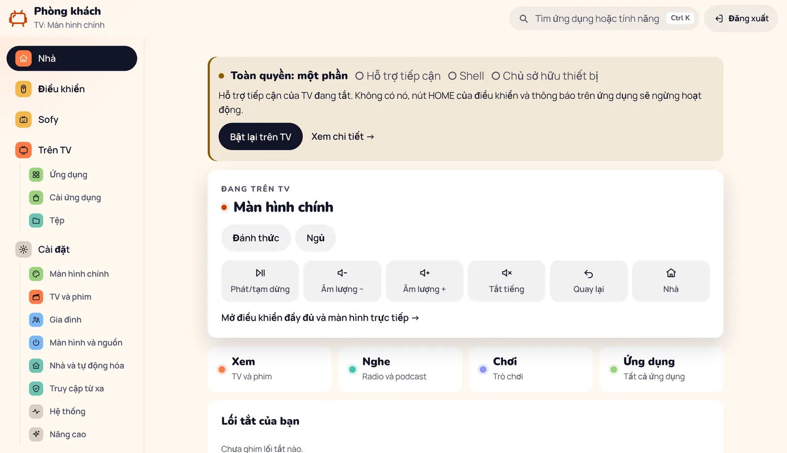
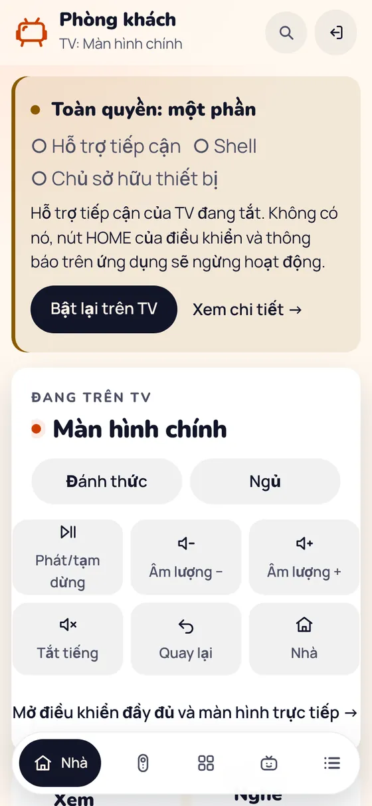

Phút giây ấm cúng trên TV của bạn. Mọi thứ đúng chỗ, như một phòng khách gọn gàng.
Làm cho những ai chỉ muốn nằm dài trên sofa và xem TV. Sofaly thay màn hình chính, không thay TV của bạn: Google vẫn ở đó, không có quảng cáo, và mọi thứ nằm ở một chỗ.
Năm hàng, mọi thứ trong tầm mắt
Xem tiếp, Xem, Nghe, Chơi và Ứng dụng. Hai lần nhấn là đến bất cứ thứ gì.
Hoàn toàn không quảng cáo
Kể cả ở gói miễn phí, không một vị trí được tài trợ nào. Không có dữ liệu theo dõi nào rời khỏi nhà bạn.
Nhanh trên TV cơ bản
Đo trên Chromecast 32 bit: hiệu ứng tự điều chỉnh theo sức của thiết bị.
Làm cho cả nhà
Cả ông bà cũng dùng được
Chữ lớn, chế độ đơn giản đọc tên ứng dụng, độ tương phản cao và trình đọc màn hình. Bằng 27 ngôn ngữ.
Thức dậy cùng bạn
Báo thức tự bật TV, tăng âm lượng từ từ và mở Chào buổi sáng: giờ, thời tiết và lịch hẹn.
Trông nhà
Đèn, cảnh và chuông cửa Home Assistant trên TV. Tự đi ngủ khi mọi người đã ra ngoài.
Nói chuyện với điện thoại
Điều khiển, gõ chữ và gửi tin nhắn từ bất kỳ điện thoại hay máy tính nào trong nhà, bảo vệ bằng PIN.
Thời tiết chính xác
Thời tiết hiện tại lấy từ sân bay gần nhất: đo thật, không đoán. Dự báo 9 ngày chỉ với một lần OK.
Tự chăm sóc mình
Bản sao lưu được khóa mỗi đêm, bảo trì trong lúc bạn ngủ và chẩn đoán giải thích điều gì đã trục trặc.
TV của bạn cũng có trên điện thoại và máy tính.
Mở trình duyệt trong cùng mạng, gõ PIN là xong: điều khiển, gõ chữ có dấu, xem trực tiếp màn hình TV, ghi chú và cài đặt. Không cần cài gì và không cần tài khoản.


- Bảng điều khiển trên điện thoại và máy tínhĐiều khiển từ xa, gõ chữ có dấu, xem trực tiếp màn hình TV, ảnh trình bảo vệ màn hình, bảng gia đình và sao lưu, từ trình duyệt của bất kỳ thiết bị nào trong nhà.
- Hỏi TVGõ hoặc nói “mở YouTube”, “nhắc tôi sau 7 phút”, “tắt sau 30 phút” và TV sẽ làm.
- Chia sẻ từ điện thoạiKhi được cài như ứng dụng, bảng điều khiển hiện trong mục Chia sẻ: video YouTube mở trên TV, liên kết mở trên TV và văn bản trở thành tin nhắn.
- Lối tắt trên WindowsTV hiện trong mục Network của Explorer với một lối tắt mở bảng điều khiển, kể cả khi IP thay đổi.
- TV làm ổ mạngSao chép tệp vào TV bằng cách kéo thả: trên Windows, TV hiện trong This PC như một chiếc điện thoại; trên Mac, Linux và điện thoại, qua WebDAV bảo mật.
- Nhiều ngôi nhàTrông TV ở nhà bạn và ở nhà bố mẹ từ cùng một điện thoại.
Màn hình thật của bảng điều khiển, với dữ liệu mẫu.
120 điều mới mà TV của bạn làm được. Sắp xếp thành 12 thế giới, giống như cách các hàng sắp xếp màn hình.
- Màn hình chínhMột màn hình gọn gàng ai cũng hiểu, sắp xếp theo ý bạn.19
- XemPhim, phim bộ của bạn và một trình phát chuẩn rạp tại gia.14
- NgheRadio và podcast được chăm chút như video.5
- ChơiMọi trò chơi của bạn ở một chỗ, sẵn sàng cho tay cầm.6
- Ứng dụngỨng dụng của bạn theo thứ tự hợp lý.3
- Ngôi nhàBáo thức, hẹn giờ, tự động hóa và nhà thông minh.13
- Thời tiết và trình bảo vệ màn hìnhThời tiết chính xác và trình bảo vệ màn hình đáng để luôn bật.13
- Gia đìnhHồ sơ cho mỗi người, chăm sóc cho trẻ em và đón tiếp khách chu đáo.12
- Điện thoại và máy tínhTV nói chuyện với các thiết bị trong nhà.11
- Tự chăm sóc mìnhSao lưu, bảo trì và chẩn đoán mà bạn không cần nhớ.13
- Cho mọi ngườiDành cho những người nhìn, nghe hoặc dùng điều khiển theo những cách khác nhau.5
- Quyền riêng tưKhông quảng cáo, không theo dõi, và có PIN ở những chỗ quan trọng.6
Màn hình chính
Một màn hình gọn gàng ai cũng hiểu, sắp xếp theo ý bạn.

Các hàng
Xem tiếp, Xem, Nghe, Chơi và Ứng dụng, mỗi mục một hàng, hàng này dưới hàng kia. Mọi thứ trong tầm mắt, chữ lớn.
Xem tiếp
Một chỗ để quay lại việc bạn đang làm: tập phim, đài radio, podcast hay ứng dụng gần nhất.
Thanh trên cùng
Tìm kiếm, giọng nói, thời tiết trong một dòng và đồng hồ, luôn ở cùng một chỗ. Nó thu gọn khi bạn duyệt để màn hình thoáng hơn.
Các hàng
Xem tiếp, Xem, Nghe, Chơi và Ứng dụng, mỗi mục một hàng, hàng này dưới hàng kia. Mọi thứ trong tầm mắt, chữ lớn.
Ở đâu: Đây chính là màn hình chính: hiện ra khi bạn bấm HOME.Xem tiếp
Một chỗ để quay lại việc bạn đang làm: tập phim, đài radio, podcast hay ứng dụng gần nhất.
Ở đâu: Một hàng trên màn hình chính.Thanh trên cùng
Tìm kiếm, giọng nói, thời tiết trong một dòng và đồng hồ, luôn ở cùng một chỗ. Nó thu gọn khi bạn duyệt để màn hình thoáng hơn.
Ở đâu: Đi lên bằng ▲.Google vẫn hoạt động
Google Assistant, Gemini, tìm kiếm và tài khoản Google của bạn vẫn hoạt động như trước. Sofaly thay màn hình chính, không thay TV của bạn.
Ở đâu: Dùng nút micro như mọi khi.Bảng nhanh
Wi-Fi, Bluetooth, hẹn giờ ngủ, đầu ra âm thanh, báo thức, hồ sơ, thông báo và danh sách mua sắm, từ bất kỳ ứng dụng nào.
Ở đâu: Giữ BACK.Điều khiển của bạn, luật của bạn
HOME luôn quay về Sofaly. Giữ BACK mở bảng nhanh, giữ HOME mở Ngôi nhà, và giữ OK trên một ứng dụng mở menu của nó.
Ở đâu: Công cụ kiểm tra phím hiển thị mọi nút mà TV nhận được.Đang phát
Một ô nhỏ ở trên cùng với ảnh bìa và tên của nội dung đang phát. OK để tạm dừng hoặc tiếp tục, giữ OK để mở ứng dụng.
Ở đâu: Bật trong Màn hình chính › Thêm tùy chọn.Giao diện và hình nền
Tối, với ảnh của mục đang chọn. Thư viện ảnh, với một bức tranh của The Met mỗi ngày. Bầu trời, với vệ tinh và bản đồ. Hoặc hình nền của riêng bạn, ảnh hay video. Hình nền từ plugin cũng dùng được, như cảnh quay trên không của Overflight.
Ở đâu: Tối, Thư viện ảnh và Bầu trời trong Basic; các giao diện khác trong Pro.Biểu tượng bạn thíchPro
Dùng gói biểu tượng từ Play hoặc đổi biểu tượng của từng ứng dụng, từng cái một.
Ở đâu: Giữ OK trên ứng dụng › Đổi biểu tượng.Hiệu ứng chuyển động hợp với TV của bạn
TV mạnh tạo hiệu ứng cho mọi thứ; TV đơn giản hơn chỉ tạo hiệu ứng cho những gì bạn chọn và tự giảm khi bị rớt khung hình.
Ở đâu: Cài đặt › Giao diện.Tuần trăngPro
Mặt trăng đêm nay và phần được chiếu sáng, tính ngay trên TV, không cần internet.
Ở đâu: Trong dự báo, trên trình bảo vệ màn hình và trên biểu tượng thời tiết vào ban đêm. Cài đặt › Giao diện.Đếm ngượcPro
Còn bao nhiêu ngày đến ngày bạn chọn, hoặc đến ngày lễ tiếp theo.
Ở đâu: Trong ô nhỏ ở đầu màn hình. Cài đặt › Giao diện.Lời nhắc việc nhàPro
Một ghi chú lặp lại vào các ngày trong tuần bạn chọn: ngày đổ rác tái chế, uống thuốc, một lớp học.
Ở đâu: Trong ô nhỏ ở đầu màn hình. Cài đặt › Giao diện.Trạng thái dịch vụ của bạnPro
TV kiểm tra một địa chỉ bạn cung cấp và cho biết nó có hoạt động không: máy chủ tại nhà, trang web của cửa hàng.
Ở đâu: Trong ô nhỏ ở đầu màn hình. Cài đặt › Giao diện.Tỷ giá hôm nayPro
Tiền tệ, bitcoin và ether theo giá hôm nay, từ các nguồn chính thức mở.
Ở đâu: Bên cạnh thời tiết, trên thanh trên cùng. Cài đặt › Giao diện.Trận đấu tiếp theo của đội bạnPro
Khi nào và gặp ai trong trận tiếp theo của đội bạn, trên một thẻ ở màn hình chính.
Ở đâu: Trên màn hình chính. Cài đặt › Giao diện.Thẻ từ ứng dụng khácPro
Ngoài các thẻ của Sofaly, ứng dụng đối tác đưa thẻ của họ lên màn hình chính: đơn giao hàng, xe buýt, thông báo của tòa nhà.
Ở đâu: Các thẻ hiện ở cuối Xem.Hòn đảo ở đầu màn hình
Các thông báo lần lượt hiện trong một ô nhỏ ở trên cùng: mất internet, lời nhắc, lịch và báo thức. Điều quan trọng sẽ phóng to trong 5 giây với “▲ để mở”, chuông cửa của Ngôi nhà hiện ngay lập tức và, khi bật TV, một bản tóm tắt những gì đã xảy ra sẽ xuất hiện.
Ở đâu: Màn hình chính, ở trên cùng.Gợi ý đúng lúc
Không dùng trí tuệ nhân tạo: dựa trên cách dùng trong tuần, TV gợi ý những gì hợp lý vào giờ đó.
Ở đâu: Màn hình chính.
Xem
Phim, phim bộ của bạn và một trình phát chuẩn rạp tại gia.
Từ máy tính
Video, nhạc và ảnh từ Plex, Jellyfin, Emby, thư mục trên PC hoặc NAS (SMB, WebDAV, FTP, SFTP, NFS), OneDrive, Dropbox, Box, Google Drive, UPnP và ổ USB.
Trình phát phát được mọi thứ
Âm thanh Dolby (AC3, E-AC3), DTS và TrueHD, cùng phụ đề Blu-ray, DVD và anime, không cần cài Kodi hay VLC.
Xem tiếp từ chỗ bạn dừng
Phim và tập phim quay lại đúng chỗ. Tập tiếp theo bắt đầu sau 10 giây, và sau 3 tập liền TV sẽ hỏi bạn còn đang xem không.
Từ máy tính
Video, nhạc và ảnh từ Plex, Jellyfin, Emby, thư mục trên PC hoặc NAS (SMB, WebDAV, FTP, SFTP, NFS), OneDrive, Dropbox, Box, Google Drive, UPnP và ổ USB.
Ở đâu: Máy chủ đang bật và ổ USB tự hiện ra; những nguồn khác thêm trong mục Thêm.Trình phát phát được mọi thứ
Âm thanh Dolby (AC3, E-AC3), DTS và TrueHD, cùng phụ đề Blu-ray, DVD và anime, không cần cài Kodi hay VLC.
Ở đâu: Nhấn ▼ khi đang xem video để chọn âm thanh, phụ đề và cỡ phụ đề.Xem tiếp từ chỗ bạn dừng
Phim và tập phim quay lại đúng chỗ. Tập tiếp theo bắt đầu sau 10 giây, và sau 3 tập liền TV sẽ hỏi bạn còn đang xem không.
Ở đâu: Tự hoạt động.Bỏ qua đoạn mở đầu
Khi biết đoạn mở đầu của phim bộ, “Bỏ qua mở đầu · OK” sẽ hiện ra. Bạn cũng có thể đánh dấu đoạn mở đầu một lần và TV sẽ ghi nhớ.
Ở đâu: Bật sẵn ngay từ đầu.Âm thanh và phụ đề ưu tiên
Bản gốc có phụ đề hoặc lồng tiếng, chọn một lần và được ghi nhớ theo từng tựa. Phụ đề từ internet khi tệp không có.
Ở đâu: TV và phim › Âm thanh và phụ đề.Phim không bị giật
TV chuyển sang 24 Hz khi phát phim, để các cú lia máy luôn mượt.
Ở đâu: Bật cùng bộ phim; màn hình nháy đen trong một giây.Nhìn và nghe rõ hơn
Phụ đề trên nền đen hoặc màu vàng, “Giọng rõ hơn” làm nổi lời thoại, và “Âm lượng đều” giảm phim quá ồn và tăng phim quá nhỏ.
Ở đâu: Trong menu ▼ của trình phát.Phụ đề tự độngUltra
Khi không có phụ đề bằng ngôn ngữ của bạn, TV sẽ dịch phụ đề đang có.
Ở đâu: Chọn trong menu phụ đề của trình phát.Trang phim đầy đủUltra
Áp phích, điểm đánh giá, diễn viên, trailer, phân loại độ tuổi và bộ sưu tập của phim trên một trang đẹp, chữ lớn. Có “Diễn viên đó là ai?”: ảnh, vai diễn và các tác phẩm khác.
Ở đâu: OK trên một phim hoặc phim bộ.Danh sách Trakt và Simkl của bạnPro
Những gì bạn muốn xem và đã xem, đồng bộ với tài khoản và các thiết bị khác của bạn.
Ở đâu: Đăng nhập bằng QR trong TV và phim › Dịch vụ.Một ô tìm kiếm cho mọi thứ
Tìm phim, phim bộ, đài radio và ứng dụng cùng lúc, và chuyển cùng từ khóa sang YouTube, Netflix hoặc Prime Video.
Ở đâu: Trên thanh trên cùng, hoặc bằng giọng nói.Hai phụ đề cùng lúc
Ví dụ, ngôn ngữ của bạn ở dưới và bản gốc ở trên, để học hoặc để xem cùng nhau.
Ở đâu: Menu ▼ của trình phát › Phụ đề.Lời thoại to hơn
Khi âm thanh 5.1 chuyển thành stereo, lời nói vẫn ở phía trước và tiếng nổ không lấn át giọng nói.
Ở đâu: Menu ▼ của trình phát.Không spoiler và ngôn ngữ thứ hai
Tóm tắt của tập bạn chưa xem được ẩn đi. Không có âm thanh hay phụ đề bằng ngôn ngữ của bạn? Ngôn ngữ thứ hai bạn chọn sẽ được dùng.
Ở đâu: TV và phim › Âm thanh và phụ đề.
Nghe
Radio và podcast được chăm chút như video.

Radio từ khắp thế giới
Hàng nghìn đài radio mở, theo tên, quốc gia hoặc thể loại, với đài yêu thích và những đài bạn nghe gần đây.
Podcast
Đăng ký theo tên, nghe trên TV và tiếp tục tập từ chỗ bạn dừng.
Khám phá podcast
Tìm trong toàn bộ danh mục podcast mở và xem những gì đang thịnh hành ở quốc gia của bạn.
Radio từ khắp thế giới
Hàng nghìn đài radio mở, theo tên, quốc gia hoặc thể loại, với đài yêu thích và những đài bạn nghe gần đây.
Ở đâu: Nghe › Radio.Podcast
Đăng ký theo tên, nghe trên TV và tiếp tục tập từ chỗ bạn dừng.
Ở đâu: Nghe › Podcast.Khám phá podcastPro
Tìm trong toàn bộ danh mục podcast mở và xem những gì đang thịnh hành ở quốc gia của bạn.
Ở đâu: Nghe › Podcast › Tìm kiếm.Trình phát toàn màn hình
Ảnh bìa lớn, chương, tốc độ và hẹn giờ ngủ dừng ở cuối tập.
Ở đâu: Nghe › Đang phát › Mở trình phát.Âm thanh trong tai nghe của bạnPro
Âm thanh của phim được chuyển sang tai nghe điện thoại, đồng bộ, để xem ban đêm mà không đánh thức ai.
Ở đâu: Menu ▼ của trình phát › Âm thanh trên điện thoại.
Chơi
Mọi trò chơi của bạn ở một chỗ, sẵn sàng cho tay cầm.

Mọi trò chơi của bạn ở một chỗ
GeForce NOW, Steam Link, Moonlight, PS Remote Play, RetroArch và các trò chơi trên TV rời khỏi hàng ứng dụng và nằm trong Chơi, chia thành Đám mây, Từ PC, Retro và Trên TV.
Chơi trên PC ở tầng trên
TV đánh thức máy tính qua mạng, chờ nó phản hồi rồi mở Moonlight hoặc Steam Link. Đánh thức PC qua mạng cũng dùng được ngoài Chơi, từ một lối tắt trên màn hình chính.
Kiểm tra mạng
Cho bạn biết internet có đủ cho game đám mây không, và cảnh báo trước khi mở game đám mây trên mạng yếu.
Mọi trò chơi của bạn ở một chỗ
GeForce NOW, Steam Link, Moonlight, PS Remote Play, RetroArch và các trò chơi trên TV rời khỏi hàng ứng dụng và nằm trong Chơi, chia thành Đám mây, Từ PC, Retro và Trên TV.
Ở đâu: Giữ OK trên một trò chơi để đổi nhóm.Chơi trên PC ở tầng trên
TV đánh thức máy tính qua mạng, chờ nó phản hồi rồi mở Moonlight hoặc Steam Link. Đánh thức PC qua mạng cũng dùng được ngoài Chơi, từ một lối tắt trên màn hình chính.
Ở đâu: Lưu máy tính một lần trong bảng điều khiển web.Kiểm tra mạng
Cho bạn biết internet có đủ cho game đám mây không, và cảnh báo trước khi mở game đám mây trên mạng yếu.
Ở đâu: Chơi › Kiểm tra mạng.Tay cầm chơi game
Ghép nối tay cầm mà không phải lục tìm menu, xem các tay cầm đã kết nối ở trên cùng và, nếu muốn, cho tay cầm vừa kết nối mở Chơi.
Ở đâu: Chơi › Ghép nối tay cầm.Chế độ chơi game
Khi đang mở trò chơi, trình bảo vệ màn hình, bộ lọc ban đêm và thông báo sẽ chờ đến khi ván đấu kết thúc.
Ở đâu: Tự bật.Hội Discord của bạn
Xem ai trong máy chủ Discord của bạn đang trực tuyến và chơi game gì, và gọi cả hội ngay từ TV.
Ở đâu: Bật widget của máy chủ và dán số của nó.
Ứng dụng
Ứng dụng của bạn theo thứ tự hợp lý.
Ứng dụng yêu thích ở phía trước
Ứng dụng hiện 8 ứng dụng bạn mở nhiều nhất, và “Tất cả ứng dụng” mang phần còn lại dưới dạng lưới.
Theo cách của bạn
Di chuyển, xếp chồng hoặc ẩn bất kỳ ứng dụng nào. Ứng dụng cài sẵn mà bạn không dùng sẽ tránh sang một bên.
Giải phóng nút Netflix và YouTube
Các nút ứng dụng trên điều khiển mở bất kỳ ứng dụng nào bạn muốn. Nhấn để mở, giữ 3 giây để đổi.
Ứng dụng yêu thích ở phía trước
Ứng dụng hiện 8 ứng dụng bạn mở nhiều nhất, và “Tất cả ứng dụng” mang phần còn lại dưới dạng lưới.
Ở đâu: Trong hàng Ứng dụng.Theo cách của bạn
Di chuyển, xếp chồng hoặc ẩn bất kỳ ứng dụng nào. Ứng dụng cài sẵn mà bạn không dùng sẽ tránh sang một bên.
Ở đâu: Giữ OK trên một ứng dụng.Giải phóng nút Netflix và YouTube
Các nút ứng dụng trên điều khiển mở bất kỳ ứng dụng nào bạn muốn. Nhấn để mở, giữ 3 giây để đổi.
Ở đâu: Dùng được với điều khiển gốc.
Ngôi nhà
Báo thức, hẹn giờ, tự động hóa và nhà thông minh.

Báo thức tự bật TV
Đúng giờ, TV tự bật, âm lượng tăng từ từ và có báo lại. Mỗi báo thức có tên, ngày, âm thanh và âm lượng, thậm chí cả một ứng dụng hoặc đài radio gần nhất.
Hẹn giờ và đồng hồ cát
Tối đa 3 bộ hẹn giờ có tên với thông báo trên màn hình, và một đồng hồ bấm giờ.
Tắt nhẹ nhàng
Hẹn giờ ngủ làm tối màn hình và giảm âm lượng trong 5 phút cuối, để không ai bị đánh thức lúc tắt.
Báo thức tự bật TV
Đúng giờ, TV tự bật, âm lượng tăng từ từ và có báo lại. Mỗi báo thức có tên, ngày, âm thanh và âm lượng, thậm chí cả một ứng dụng hoặc đài radio gần nhất.
Ở đâu: Giữ BACK › Báo thức.Hẹn giờ và đồng hồ cát
Tối đa 3 bộ hẹn giờ có tên với thông báo trên màn hình, và một đồng hồ bấm giờ.
Ở đâu: “Ok Google, mở Nhắc tôi sau 10 phút”.Tắt nhẹ nhàng
Hẹn giờ ngủ làm tối màn hình và giảm âm lượng trong 5 phút cuối, để không ai bị đánh thức lúc tắt.
Ở đâu: Ô hẹn giờ trong bảng nhanh.Tự tắt khi không ai xem
Sau khoảng thời gian bạn chọn mà không có phím nào được nhấn, TV hỏi bằng chữ lớn xem bạn còn xem không, rồi đi ngủ.
Ở đâu: Màn hình và nguồn › Tắt khi không dùng.Công thức có sẵn
Ngủ, Phim truyền hình và Trận đấu thiết lập TV chỉ trong một lần (âm thanh, màn hình và thông báo). Một lần OK để áp dụng, một lần nữa để hoàn tác.
Ở đâu: Bảng nhanh.Tự động hóaPro
Vào giờ định sẵn, khi nhấn một nút hoặc khi có điều gì xảy ra (phim tạm dừng, mọi người đã ra ngoài, sắp mưa): TV mở một ứng dụng, chạy một cảnh hoặc tắt.
Ở đâu: Nhà và tự động hóa › Tự động hóa.Home Assistant trên TVPro
Đèn, ổ cắm, quạt, rèm, điều hòa và cảnh, ngay từ ghế sofa. TV nói chuyện với máy chủ trong mạng của bạn, không có đám mây ở giữa.
Ở đâu: Giữ HOME.Ai đang ở cửaPro
Khi chuông cửa reo, ảnh chụp từ camera hiện lên trên bất cứ thứ gì bạn đang xem.
Ở đâu: Với Home Assistant.Đi ngủ khi mọi người ra ngoài
Với router UniFi, TV nhận ra điện thoại của cả nhà đã rời đi và đi ngủ.
Ở đâu: Màn hình và nguồn › Thêm tùy chọn.Lối tắt giọng nói
“Ok Google, mở Bản tin thời tiết” đọc to dự báo. Phim, Nhà của tôi, Bảng tin, hẹn giờ và tắt TV cũng mở theo cách đó.
Ở đâu: Dùng nút micro.Bật cùng TV
Bật TV bằng điều khiển của nó? Thiết bị cũng thức dậy theo, không bị màn hình đen. Thêm âm lượng LG qua mạng; khi thiết bị tự ngủ, TV LG cũng tắt theo.
Ở đâu: Tự bật.Không làm phiền
Trong các giờ bạn chọn, thông báo và âm thanh sẽ chờ.
Ở đâu: Nhà và tự động hóa.“Chỉ khi” và ngày lễ
Tự động hóa chỉ chạy vào ngày thường, khi có người ở nhà hoặc khi trời mưa, có biết các ngày lễ của nước bạn.
Ở đâu: Nhà và tự động hóa › Tự động hóa.
Thời tiết và trình bảo vệ màn hình
Thời tiết chính xác và trình bảo vệ màn hình đáng để luôn bật.
Thời tiết hôm nay, được đo thật
Nhiệt độ lấy từ bản tin của sân bay gần nhất, và biểu tượng ngày/đêm theo giờ mặt trời mọc và lặn nơi đặt TV.
Mưa từ ba mô hình
Khả năng mưa là trung vị của ba mô hình thời tiết (ECMWF, ICON và GFS), sai ít hơn bất kỳ mô hình riêng lẻ nào.
Dự báo toàn màn hình
24 giờ tới, biểu đồ mưa, 9 ngày, chất lượng không khí, mặt trời và mặt trăng.
Thời tiết hôm nay, được đo thật
Nhiệt độ lấy từ bản tin của sân bay gần nhất, và biểu tượng ngày/đêm theo giờ mặt trời mọc và lặn nơi đặt TV.
Ở đâu: Ở đầu màn hình chính.Mưa từ ba mô hìnhUltra
Khả năng mưa là trung vị của ba mô hình thời tiết (ECMWF, ICON và GFS), sai ít hơn bất kỳ mô hình riêng lẻ nào.
Ở đâu: Tự hiện trong dự báo.Dự báo toàn màn hình
24 giờ tới, biểu đồ mưa, 9 ngày, chất lượng không khí, mặt trời và mặt trăng.
Ở đâu: OK trên thời tiết.Cảnh báo mưa
Thông báo hiện trên ứng dụng của bạn khi trời sắp mưa. Đến lúc mang quần áo vào.
Ở đâu: Màn hình chính › Thời tiết.Trình bảo vệ màn hình đáng để luôn bật
Lời chào, đồng hồ lớn, ngày, thời tiết và các thẻ với thông báo, báo thức tiếp theo và tin nhắn. Ở giao diện Thư viện ảnh, bức tranh của ngày trôi chậm để không gì bị lưu ảnh trên màn hình.
Ở đâu: Màn hình và nguồn › Trình bảo vệ màn hình.Ảnh của bạn trên trình bảo vệ màn hình
Gửi ảnh từ điện thoại hoặc chọn một thư mục mạng. Ảnh nằm trong một thư mục chỉ TV thấy được.
Ở đâu: Một mã QR mở bảng điều khiển đúng trang.Chào buổi sáng
Khi bạn tắt báo thức: lời chào, giờ, dự báo và lịch hôm nay, và TV có thể đọc to.
Ở đâu: “Ok Google, mở Chào buổi sáng”.Google Calendar
Sự kiện và sinh nhật hôm nay trên TV, từ một tài khoản hoặc tất cả gộp lại.
Ở đâu: OK trên ngày ở trên cùng.Bộ lọc ban đêm
Ban đêm, màn hình ấm hơn và dịu mắt hơn.
Ở đâu: Màn hình và nguồn › Thêm tùy chọn.Tổng kết tuần
Tối Chủ nhật, một thẻ với thời gian xem theo ứng dụng, lượng internet đã dùng và số lần mất mạng.
Ở đâu: Màn hình và nguồn › Thêm tùy chọn.Cảnh báo nóng hoặc lạnh gắt
Giống cảnh báo mưa, hiện trên mọi màn hình, khi sắp có nóng hoặc lạnh gắt.
Ở đâu: Màn hình chính › Thời tiết.Bầu trời đêm
Trạm Vũ trụ, mưa sao băng, siêu trăng và nhật nguyệt thực. Chỉ báo khi có thể nhìn thấy từ nhà bạn, với trời quang.
Ở đâu: Trình bảo vệ màn hình.Một năm của TV bạn
Vào tháng 12, nhìn lại cả năm: những gì được xem, nghe và chơi nhiều nhất trên TV của bạn. Chỉ lưu trên TV.
Ở đâu: Xuất hiện vào tháng 12.
Gia đình
Hồ sơ cho mỗi người, chăm sóc cho trẻ em và đón tiếp khách chu đáo.

Hồ sơ cho mỗi người
Mỗi tài khoản Google trên TV có mục yêu thích, nội dung xem tiếp và thứ tự ứng dụng riêng.
Hồ sơ trẻ em
Đánh dấu một hồ sơ là của trẻ em: chế độ trẻ em và giờ đi ngủ tự bật, và muốn thoát phải có PIN của bố mẹ.
Giờ đi ngủ
Trong các giờ bạn chọn, chỉ ứng dụng được phép mới mở được và âm lượng có giới hạn.
Hồ sơ cho mỗi người
Mỗi tài khoản Google trên TV có mục yêu thích, nội dung xem tiếp và thứ tự ứng dụng riêng.
Ở đâu: Giữ BACK › Hồ sơ.Hồ sơ trẻ em
Đánh dấu một hồ sơ là của trẻ em: chế độ trẻ em và giờ đi ngủ tự bật, và muốn thoát phải có PIN của bố mẹ.
Ở đâu: Bảng nhanh › Hồ sơ.Giờ đi ngủ
Trong các giờ bạn chọn, chỉ ứng dụng được phép mới mở được và âm lượng có giới hạn.
Ở đâu: Gia đình › Thêm tùy chọn.Thời gian xem mỗi ngày
Giới hạn xem TV mỗi ngày cho người bạn chọn.
Ở đâu: Gia đình › Thêm tùy chọn.Chế độ khách
Ẩn hồ sơ, lịch và các ứng dụng bạn chọn khi nhà có khách.
Ở đâu: Ô Khách trong bảng nhanh.Wi-Fi cho khách
Gõ mật khẩu một lần; khách quét QR trên TV là vào được.
Ở đâu: Gia đình › Wi-Fi cho khách.Bảng gia đình
Danh sách mua sắm, ghi chú được ghim và sinh nhật hôm nay, trong bảng nhanh và trên trình bảo vệ màn hình.
Ở đâu: Sửa từ điện thoại; OK để gạch một mục.Tin nhắn từ xaPro
Người thân ở xa gửi tin nhắn và ảnh đến TV ở nhà, từ bất cứ đâu.
Ở đâu: Mời bằng liên kết.Tin nhắn videoPro
Một đoạn video ngắn của gia đình hiện trên TV kèm tên người gửi.
Ở đâu: Từ bảng điều khiển trên điện thoại.Phân loại độ tuổi
Ở chế độ trẻ em, phim và phim bộ theo đúng độ tuổi, ngoài các danh mục.
Ở đâu: Gia đình.Chế độ chủ nhà
Cho nhà cho thuê: khách dùng TV, còn đồ của bạn được cất đi và trở lại khi kỳ lưu trú kết thúc.
Ở đâu: Gia đình › Thêm tùy chọn.Chăm sóc từ xa
Người sống một mình nhờ trợ giúp bằng cách giữ một phím, và điện thoại của người chăm sóc nhận cảnh báo. Chỉ bật khi người sống ở đó đồng ý, ngay trên TV.
Ở đâu: Gia đình › Chăm sóc từ xa.
Điện thoại và máy tính
TV nói chuyện với các thiết bị trong nhà.

Bảng điều khiển trên điện thoại và máy tính
Điều khiển từ xa, gõ chữ có dấu, xem trực tiếp màn hình TV, ảnh trình bảo vệ màn hình, bảng gia đình và sao lưu, từ trình duyệt của bất kỳ thiết bị nào trong nhà.
Hỏi TV
Gõ hoặc nói “mở YouTube”, “nhắc tôi sau 7 phút”, “tắt sau 30 phút” và TV sẽ làm.
Chia sẻ từ điện thoại
Khi được cài như ứng dụng, bảng điều khiển hiện trong mục Chia sẻ: video YouTube mở trên TV, liên kết mở trên TV và văn bản trở thành tin nhắn.
Bảng điều khiển trên điện thoại và máy tính
Điều khiển từ xa, gõ chữ có dấu, xem trực tiếp màn hình TV, ảnh trình bảo vệ màn hình, bảng gia đình và sao lưu, từ trình duyệt của bất kỳ thiết bị nào trong nhà.
Ở đâu: Truy cập từ xa › Đăng nhập từ điện thoại (QR).Hỏi TVPro
Gõ hoặc nói “mở YouTube”, “nhắc tôi sau 7 phút”, “tắt sau 30 phút” và TV sẽ làm.
Ở đâu: Trong bảng điều khiển trên điện thoại.Chia sẻ từ điện thoạiPro
Khi được cài như ứng dụng, bảng điều khiển hiện trong mục Chia sẻ: video YouTube mở trên TV, liên kết mở trên TV và văn bản trở thành tin nhắn.
Ở đâu: Chia sẻ › Sofaly.TV làm ổ mạngPro
Sao chép tệp vào TV bằng cách kéo thả: trên Windows, TV hiện trong This PC như một chiếc điện thoại; trên Mac, Linux và điện thoại, qua WebDAV bảo mật.
Ở đâu: Truy cập từ xa › Hiện như ổ mạng.Lối tắt trên WindowsPro
TV hiện trong mục Network của Explorer với một lối tắt mở bảng điều khiển, kể cả khi IP thay đổi.
Ở đâu: Luôn bật khi bảng điều khiển bật.Xem tiếp trên TV khácPro
Đang xem dở ở phòng khách? Gửi sang phòng ngủ: TV kia hiện “Xem tiếp từ chỗ đã dừng?” và mở đúng chỗ đó.
Ở đâu: Menu trình phát › Gửi sang TV khác.Xem cùng nhauUltra
Hai nhà xem cùng một nội dung cùng lúc: tạm dừng ở đây, bên kia cũng dừng, kèm biểu cảm ở góc màn hình.
Ở đâu: Mời giữa các TV trong gia đình.Nhiều ngôi nhàUltra
Trông TV ở nhà bạn và ở nhà bố mẹ từ cùng một điện thoại.
Ở đâu: Từ ứng dụng trên điện thoại.Nói chuyện với TV qua Claude
Trò chuyện với TV qua Claude: TV cho bạn biết đang chiếu gì, mở ứng dụng và điều chỉnh mọi thứ. Một mã QR trên màn hình, không khóa, không mật khẩu.
Ở đâu: Truy cập từ xa › Claude qua internet.Bàn phím điện thoại
Một ô nhập văn bản mở trên TV? Bàn phím hiện ra trên điện thoại của bạn.
Ở đâu: Tự bật cùng bảng điều khiển.Cảnh báo trên điện thoại
Báo thức, chuông cửa và ghi chú đến điện thoại của bạn, không có máy chủ ở giữa.
Ở đâu: Bảng điều khiển › Cảnh báo trên điện thoại.
Tự chăm sóc mình
Sao lưu, bảo trì và chẩn đoán mà bạn không cần nhớ.

TV mới trong 2 phút
Mua TV khác? Quét một mã QR và mọi thứ chuyển sang đó, được mã hóa.
Sao lưu được khóa, mỗi đêm
Khi TV rảnh, một bản sao lưu đầy đủ được khóa bằng mật khẩu của bạn. Giữ 7 bản gần nhất, và mỗi đêm TV kiểm tra xem bản sao có khôi phục được không.
Một bản trên đám mây
Bản sao còn được gửi đến Google Drive, OneDrive, Dropbox, Box, NAS hoặc ổ USB của bạn. Được khóa: ngay cả đám mây cũng không đọc được.
TV mới trong 2 phút
Mua TV khác? Quét một mã QR và mọi thứ chuyển sang đó, được mã hóa.
Ở đâu: Hệ thống › Sao lưu › Chuyển sang TV mới.Sao lưu được khóa, mỗi đêm
Khi TV rảnh, một bản sao lưu đầy đủ được khóa bằng mật khẩu của bạn. Giữ 7 bản gần nhất, và mỗi đêm TV kiểm tra xem bản sao có khôi phục được không.
Ở đâu: Hệ thống › Sao lưu tự động.Một bản trên đám mâyPro
Bản sao còn được gửi đến Google Drive, OneDrive, Dropbox, Box, NAS hoặc ổ USB của bạn. Được khóa: ngay cả đám mây cũng không đọc được.
Ở đâu: Hệ thống › Sao lưu tự động.Bảo trì qua đêm
Dọn phần thừa, sửa quyền và lên lịch lại báo thức trong lúc bạn ngủ.
Ở đâu: Tự chạy.Chẩn đoán TV
Internet, DNS và lý do một ứng dụng ngừng chạy, tất cả cùng lúc và bằng những câu dễ hiểu.
Ở đâu: “Ok Google, mở Chẩn đoán TV”.Kiểm tra tốc độ internet
Đo internet chỉ với một lần chạm và hiển thị tín hiệu Wi-Fi, độ trễ và tốc độ bằng lời dễ hiểu.
Ở đâu: Cài đặt › Nâng cao › Mạng.Tình trạng của TV này
TV tự đo các chỉ số của mình (thời gian mở, sự cố, báo thức đúng giờ) và hiển thị trên một màn hình. Không có gì rời khỏi nhà bạn.
Ở đâu: Hệ thống › Tình trạng của TV này.Chế độ an toàn
Nếu phiên bản mới gặp trục trặc ngay sau khi cài, TV chuyển về chế độ an toàn và chỉ cách thoát ra.
Ở đâu: Chỉ hiện khi cần.Có gì thay đổi
Mỗi phiên bản giải thích những gì đã thay đổi và kèm một danh sách ngắn để thử bằng điều khiển.
Ở đâu: Hệ thống › Có gì thay đổi.Báo cáo sự cố
Kể lại chuyện gì đã xảy ra bằng điều khiển hoặc từ điện thoại; TV thu thập những gì cần thiết, không có gì cá nhân.
Ở đâu: Hệ thống › Báo cáo sự cố.Wi-Fi tự kết nối lại
Nếu Wi-Fi không trở lại sau khi bị mất, TV sẽ tự kết nối lại.
Ở đâu: Tự bật.Mất internet, không hoảng
Màn hình chính cho biết trong một dòng những gì vẫn hoạt động trong lúc chưa có internet.
Ở đâu: Chỉ hiện khi cần.Dọn ứng dụng cài sẵn
Đưa ra khỏi tầm mắt các ứng dụng đi kèm TV mà bạn không dùng, có hoàn tác, và hiển thị số đo trước và sau.
Ở đâu: Hệ thống › Dọn dẹp.
Cho mọi người
Dành cho những người nhìn, nghe hoặc dùng điều khiển theo những cách khác nhau.

27 ngôn ngữ
Tiếng Bồ Đào Nha, tiếng Anh, tiếng Tây Ban Nha, tiếng Pháp, tiếng Đức, tiếng Ý, tiếng Nga, tiếng Ba Lan, tiếng Thổ Nhĩ Kỳ, tiếng Nhật, tiếng Trung, tiếng Hàn, tiếng Hindi, tiếng Indonesia và tiếng Ả Rập, với màn hình từ phải sang trái. Ngoài ra còn tiếng Hà Lan, Thụy Điển, Đan Mạch, Na Uy, Phần Lan, Séc, Hy Lạp, Hungary, Romania, Ukraina, tiếng Việt và tiếng Thái. Theo ngôn ngữ của TV.
Cỡ chữ
Bình thường, Lớn hoặc Rất lớn, trên mọi màn hình, đã được kiểm tra để chữ không bao giờ bị cắt hay chồng lên nhau.
Chế độ đơn giản
Thẻ lớn, ít thứ trên màn hình và tên ứng dụng được đọc to. Dành cho người thấy điều khiển khó dùng.
27 ngôn ngữ
Tiếng Bồ Đào Nha, tiếng Anh, tiếng Tây Ban Nha, tiếng Pháp, tiếng Đức, tiếng Ý, tiếng Nga, tiếng Ba Lan, tiếng Thổ Nhĩ Kỳ, tiếng Nhật, tiếng Trung, tiếng Hàn, tiếng Hindi, tiếng Indonesia và tiếng Ả Rập, với màn hình từ phải sang trái. Ngoài ra còn tiếng Hà Lan, Thụy Điển, Đan Mạch, Na Uy, Phần Lan, Séc, Hy Lạp, Hungary, Romania, Ukraina, tiếng Việt và tiếng Thái. Theo ngôn ngữ của TV.
Ở đâu: Tự thay đổi theo TV.Cỡ chữ
Bình thường, Lớn hoặc Rất lớn, trên mọi màn hình, đã được kiểm tra để chữ không bao giờ bị cắt hay chồng lên nhau.
Ở đâu: Màn hình chính › Cỡ chữ.Chế độ đơn giản
Thẻ lớn, ít thứ trên màn hình và tên ứng dụng được đọc to. Dành cho người thấy điều khiển khó dùng.
Ở đâu: Màn hình chính › Thêm tùy chọn.Đọc to
TV nói mục đang được chọn, kèm âm thanh điều hướng để bạn biết mình đang ở đâu.
Ở đâu: Màn hình chính › Thêm tùy chọn.Độ tương phản cao
Chữ có tỷ lệ tương phản 7:1 và mọi màn hình đều đọc được bằng trình đọc màn hình của Android.
Ở đâu: Theo cài đặt hỗ trợ tiếp cận của TV.
Quyền riêng tư
Không quảng cáo, không theo dõi, và có PIN ở những chỗ quan trọng.
Hoàn toàn không quảng cáo
Kể cả ở gói miễn phí, không một đề xuất được tài trợ nào. Màn hình là của bạn.
Không theo dõi
Không tài khoản, không phân tích sử dụng và không báo cáo sự cố nào được gửi đi nếu bạn không gửi.
PIN ở những chỗ quan trọng
Mọi thứ thay đổi TV đều cần PIN, và các thao tác xóa sẽ hỏi lại. Sai quá nhiều lần? Thời gian chờ tăng dần mỗi lần.
Hoàn toàn không quảng cáo
Kể cả ở gói miễn phí, không một đề xuất được tài trợ nào. Màn hình là của bạn.
Ở đâu: Luôn luôn.Không theo dõi
Không tài khoản, không phân tích sử dụng và không báo cáo sự cố nào được gửi đi nếu bạn không gửi.
Ở đâu: Luôn luôn.PIN ở những chỗ quan trọng
Mọi thứ thay đổi TV đều cần PIN, và các thao tác xóa sẽ hỏi lại. Sai quá nhiều lần? Thời gian chờ tăng dần mỗi lần.
Ở đâu: Truy cập từ xa › PIN.DNS riêng tư
Chọn một DNS bảo mật (DNS over TLS); nếu nó không phản hồi, TV tự quay lại DNS trước đó.
Ở đâu: Nâng cao › Mạng.Internet theo ứng dụng
Mỗi ứng dụng đã dùng bao nhiêu internet và đã kết nối với ai, lưu trên TV trong 7 ngày.
Ở đâu: Nâng cao › Mạng.PIN để thay đổi màn hình chính
Không ai làm rối màn hình của bạn: di chuyển, ẩn hay hoán đổi đều cần PIN.
Ở đâu: Màn hình chính › Thêm tùy chọn.
Ứng dụng của bạn trên màn hình chính mà mọi người thật sự nhìn vào.
Plugin Sofaly là ứng dụng Android TV của chính bạn. Nó gửi một thẻ ngắn và Sofaly vẽ thẻ đó lên màn hình chính, chữ lớn và theo phong cách chung của ngôi nhà.
- Giao hàng12 phút
- Xe buýt 426 phút
- Phòng tập19:00
Vì sao nên làm plugin
Ở phía trước, không nằm trong ngăn kéo
Thẻ của bạn nằm trên màn hình chính, nơi cả nhà nhìn vào mỗi lần bật TV, chứ không bị lạc trong danh sách ứng dụng.
Không SDK, không phí
Một ContentProvider và một dòng dữ liệu. Không thư viện nào của chúng tôi cần cài, không phí nào phải trả.
Ứng dụng của bạn, việc kinh doanh của bạn
Phát hành trên Play theo cách bạn muốn, miễn phí hay trả phí. Sofaly chỉ vẽ thẻ; ứng dụng và khách hàng là của bạn.
Những gì bạn có thể làm ngoài các thẻ của chúng tôi
- Đơn giao hàng của bạnĐơn hàng đang trên đường, còn 12 phút.
- Xe buýt của bạnTuyến 42 đến sau 6 phút.
- Phòng tập của bạnLớp hôm nay lúc 19 giờ.
- Tòa nhà của bạnNgày mai cắt nước, từ 9 giờ đến 12 giờ trưa.
- Cửa hàng của bạnƯu đãi hôm nay: giảm 20% cà phê.
- Câu lạc bộ của bạnBuổi tập dời sang thứ Bảy.
Hai bước
- Khai báo một provider với action của Sofaly
- Trả về một dòng: tiêu đề, giá trị, chi tiết và màu
Mẫu có sẵn Hai ứng dụng mẫu bạn có thể build ngay hôm nay: đếm ngược đến ngày người dùng chọn trên TV, và tuần trăng hôm nay. Không internet, không tài khoản. MIT No Attribution: sao chép, đổi tên gói, phát hành.
Quy tắc bảo vệ người xem
- Bạn không bao giờ vẽ lên màn hình chính: bạn gửi văn bản và màu, Sofaly sẽ vẽ.
- Sofaly không bao giờ gửi cho bạn bất cứ điều gì về ứng dụng, tài khoản hay những gì người dùng xem.
- Plugin thuộc gói Pro, và người dùng chọn plugin nào được hiện.
Đã có trên TV: hình nền plugin, gói biểu tượng và kho giới thiệu plugin ngay trên TV.
GóiBắt đầu miễn phí. Nâng cấp khi bạn muốn.
Basic đã có đầy đủ màn hình chính, trình phát, Nghe, Chơi, báo thức và trình bảo vệ màn hình. Pro và Ultra thêm điện thoại, ngôi nhà và gia đình.
Giá sẽ được công bố khi ứng dụng lên Google Play.
Câu hỏiCâu hỏi từ ghế sofa
Có chạy trên TV của tôi không?
Tôi có cần máy tính để cài không?
Ứng dụng của tôi có còn không?
Có quảng cáo không?
Có kèm kênh hay phim không?
Nếu tôi muốn quay lại màn hình chính của Google thì sao?
Phút giây ấm cúng trên TV của bạn.
Cài đặt, nhấn HOME và cả nhà đều dùng được.
Trên ứng dụng Downloader của TV, gõ mã 6566820
Hoặc tải APK tại sofaly.tv/download